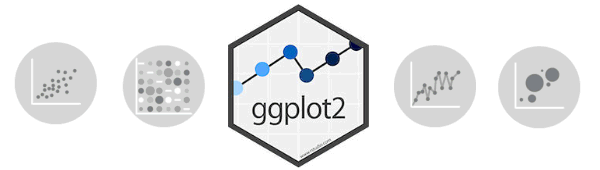
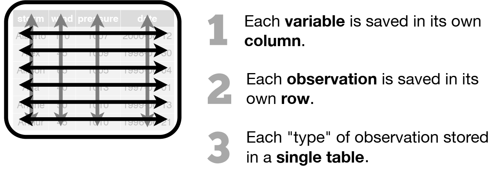
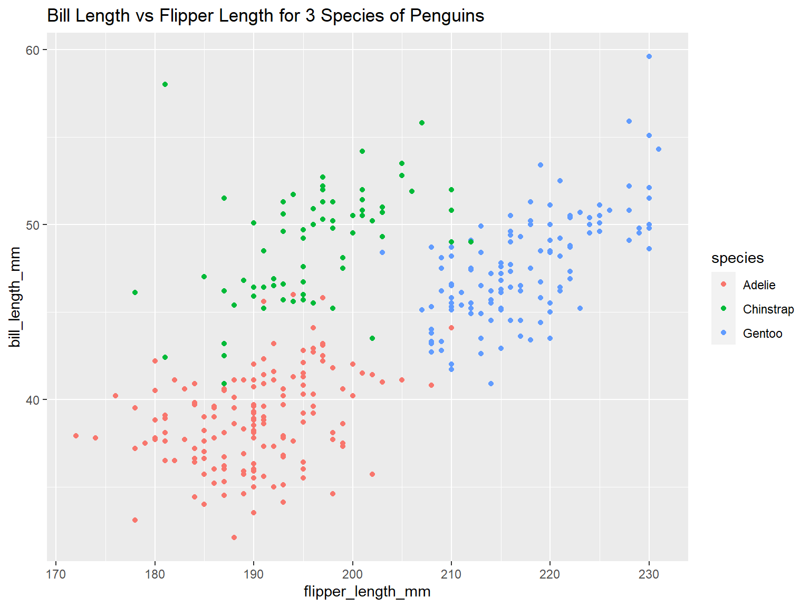
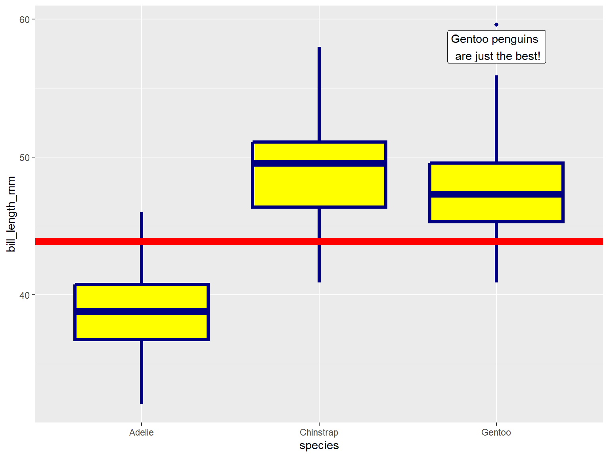

Intro to R Part 4:
Data Wrangling 2 and ggplot

Andy
Lyons
October 18, 2023
https://ucanr-igis.github.io/IntroR_Oct23/


Review
Data Wrangling
- dropping columns
- renaming columns
- changing the order of columns
- creating new columns with an expression
- filtering rows
- sorting rows
- going from ‘long’ to ‘wide’ formats
- joining data frames based on a common field
- merging data frames together
- splitting tables
- aggregating rows into groups
Tidy data

Specialized packages
for importing data


Row and column manipulations
(dplyr)
|
subset rows
|
filter(), slice()
|
|
order rows
|
arrange()
|
|
pick column(s)
|
select(), pull()
|
|
add new columns
|
mutate()
|
Join and merge tables
(dplyr)
|
join data frames on a column
|
left_join(), right_join(), inner_join()
|
|
stack data frames
|
bind_rows()
|
Reshape tables (tidyr)
|
convert rows to columns
|
pivot_wider()
|
|
turn columns into rows
|
pivot_longer()
|
Group rows and summarize
(dplyr)
Step 1 (optional):
group rows (i.e., change the unit
of analysis)
|
group_by()
|
Step 2:
Compute summaries for each group of rows
|
summarize() with:
n(), mean(), median(), sum(), sd(), first(), etc.
|
Tips from Homework 3
Exploring large data frames with the View pane:
Dates & Times
Challenges with date & time
data
Often saved as formatted text:
- October 5, 2023
- 5 Oct., 2023
- 10/05/2023
- 2023-10-05
Date formatting is often regional:
Date & Time Classes
Dates
Date class in R: Date
## [1] "2023-10-15"
## [1] "2023-09-25"
Time
Date & time classes: POSIXct,
POSIXlt
## [1] "2023-10-17 19:28:42 PDT"
## [1] "POSIXct" "POSIXt"
Supported Date Time
Operations
- format as text
- extract date and time parts
- Julian numbers
- time zones automatically saved
- date-time math
- intervals
- smart formatting on axes
- etc.
Importing and Exporting Date-Times
Converting Text to
Date-Times
Functions from lubridate:
ymd_hms(), ymd_hm(), ymd_h()
ydm_hms(), ydm_hm(), ydm_h()
mdy_hms(), mdy_hm(), mdy_h()
dmy_hms(), dmy_hm(), dmy_h()
Examples:
library(lubridate)
ymd_hms("2017-11-28T14:02:00")
## [1] "2017-11-28 14:02:00 UTC"
ymd_hms("2017-11-28T14:02:00", tz = "America/Los_Angeles")
## [1] "2017-11-28 14:02:00 PST"
Pro Tips:
To see the accepted time zone names, run
OlsonNames()
Don’t name an object date
Combining dates and times in separate columns:
Saving Date-Times in
Tabular Data Files
Recommendations:
- Use a format that supports and enforces field / column types
R, any database format (sqlite, PostGres), Stata, SAS, SPSS
- For text (including csv) or Excel, save date-times as character
fields using unambiguous format:
dates: yyyy-mm-dd
date-times: ISO 8601
mydata_df <- data.frame(temp_dt = Sys.time() - (3:1) * 60 * 60 * 24 + runif(3, min=0, max=86400),
temp_val = sample(70:90, 3)) |>
mutate(temp_date = date(temp_dt)) |>
relocate(temp_date, temp_dt, temp_val)
mydata_df
## temp_date temp_dt temp_val
## 1 2023-10-15 2023-10-15 11:56:44 88
## 2 2023-10-16 2023-10-16 12:14:45 84
## 3 2023-10-17 2023-10-17 20:48:49 73
mydata_4csv <- mydata_df |>
mutate(date_chr = format(temp_date, "%Y-%m-%d"),
time_chr = format_ISO8601(temp_dt, usetz = TRUE))
mydata_4csv
## temp_date temp_dt temp_val date_chr time_chr
## 1 2023-10-15 2023-10-15 11:56:44 88 2023-10-15 2023-10-15T11:56:44-0700
## 2 2023-10-16 2023-10-16 12:14:45 84 2023-10-16 2023-10-16T12:14:45-0700
## 3 2023-10-17 2023-10-17 20:48:49 73 2023-10-17 2023-10-17T20:48:49-0700
ggplot 101
Example
Load Palmer Penguins data frame:
library(palmerpenguins)
head(penguins)
## # A tibble: 6 × 8
## species island bill_length_mm bill_depth_mm flipper_length_mm body_mass_g
## <fct> <fct> <dbl> <dbl> <int> <int>
## 1 Adelie Torgersen 39.1 18.7 181 3750
## 2 Adelie Torgersen 39.5 17.4 186 3800
## 3 Adelie Torgersen 40.3 18 195 3250
## 4 Adelie Torgersen NA NA NA NA
## 5 Adelie Torgersen 36.7 19.3 193 3450
## 6 Adelie Torgersen 39.3 20.6 190 3650
## # ℹ 2 more variables: sex <fct>, year <int>
Use ggplot to make a scatter plot:
ggplot(penguins, aes(x = flipper_length_mm, y = bill_length_mm, color = species)) +
geom_point() +
ggtitle("Bill Length vs Flipper Length for 3 Species of Penguins")
## Warning: Removed 2 rows containing missing values (`geom_point()`).

Maping Columns to Symbology Properties with aes()
ggplot(penguins, aes(x = flipper_length_mm , y = bill_length_mm , color = species)) +
geom_point() +
ggtitle("Bill Length vs Flipper Length for 3 Species of Penguins")
aes() sets the default source for each visual property
(or aesthetic) of the plot layers
- note you don’t need to put column names in quotes
- some common visual properties:
x - where it falls along the x-axis
y - where it falls along the y-axis
color
fill
size
- which visual properties are needed depends on the
geom_xxxx() functions you use
- only put in
aes() the visual properties you want linked
to the data
Geoms
- geom_point()
- geom_bar()
- geom_boxplot()
- geom_histogram()
- visual properties can be linked to a column in the data frame or
manually specified
geom_point(col = pop_size)
geom_point(col = “red”)
Example:
In the example below, note where geom_boxplot() gets its
visual properties:
- x and y are linked to columns in
the dataframe and inherited from
aes()
- color, fill, and
size are manually specified
ggplot(penguins, aes(x = species, y = bill_length_mm)) +
geom_boxplot(color = "navy", fill = "yellow", size = 1.5)
## Warning: Removed 2 rows containing non-finite values (`stat_boxplot()`).

Adding visual elements to a
plot
geom_xxxx() functions can also be used to add other
graphic elements:
ggplot(penguins, aes(x = species, y = bill_length_mm)) +
geom_boxplot(color = "navy", fill = "yellow", size = 1.5) +
geom_hline(yintercept = 43.9, size=3, color="red") +
geom_label(x = 3, y = 58, label = "Gentoo penguins \n are just the best!")
## Warning: Using `size` aesthetic for lines was deprecated in ggplot2 3.4.0.
## ℹ Please use `linewidth` instead.
## This warning is displayed once every 8 hours.
## Call `lifecycle::last_lifecycle_warnings()` to see where this warning was
## generated.
## Warning: Removed 2 rows containing non-finite values (`stat_boxplot()`).

Working Backwards